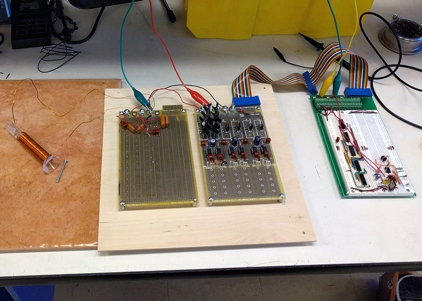
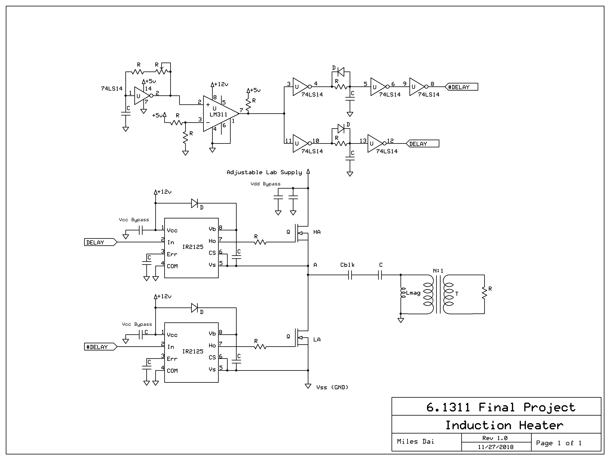
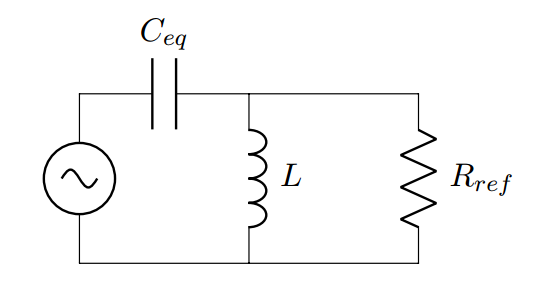
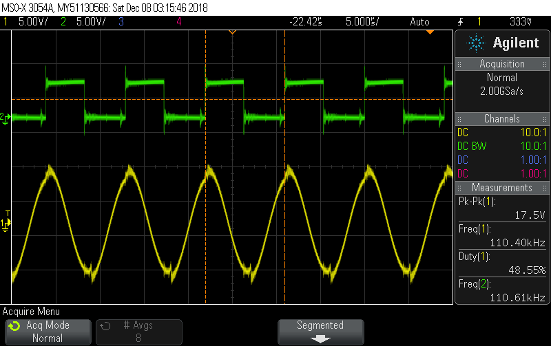
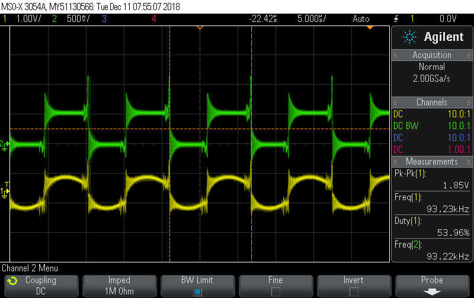
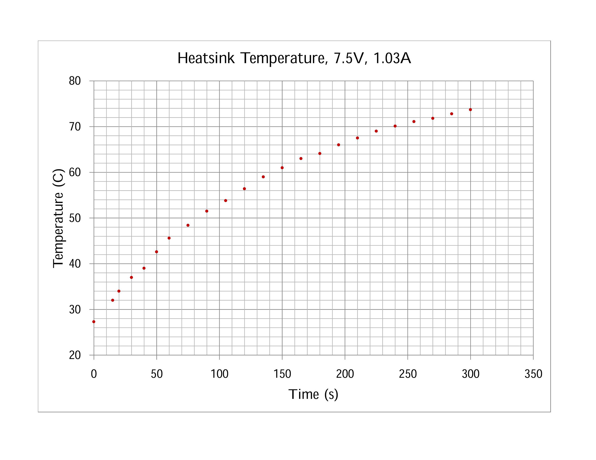
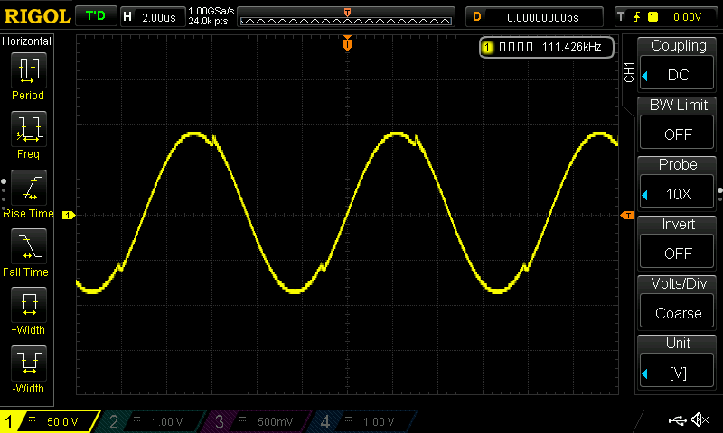
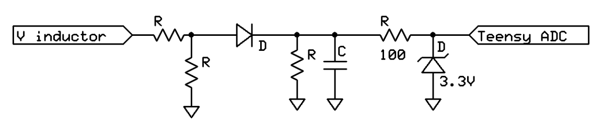
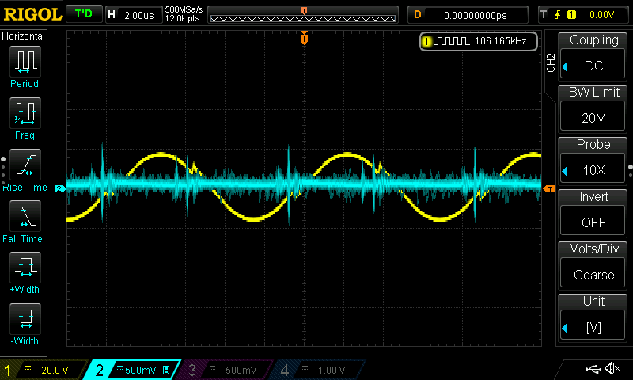

Induction Heater
Fall 2018
Background
Induction heating is the phenomenon by which eddy currents formed in an electrically conductive material through Faraday's Law of Induction heat the object. To take advantage of this effect, an induction heater passes an AC current through an electromagnet in order to produce a rapidly changing magnetic field. This induces a current in the workpiece which rises in temperature due to resistive and possibly hysteretic heating.
Induction heating is particularly intriguing because it does not require a heating element to be in contact with the target, and it does not require an external heating element that needs to be brought up to the desired temperature. Instead, the device itself, like a stovetop, for example, can remain near ambient temperature with only the temperature of the target material rising significantly.
Physics
The crux of a successful induction heater is the production of an alternating magnetic field. This field is created in what is known as the work coil - the coil of wire that surrounds the object to be heated. The flux from this field (\(\Phi_B\)) is then coupled into the target object to generate a voltage (\(v\)) according to Faraday's Law. $$v = -\frac{d\Phi_b}{dt}$$
The generated voltage causes a current in the object which produces heat. This heating effect is caused by ohmic losses (Joule heating) and also hysteresis losses if the object is ferromagnetic.
Another important consideration in the design of the system is the skin effect in which alternating currents have a tendency to concentrate near the surface of the conductor as their frequency increases. As a result, the effective resistance of the workpiece increases with frequency.
Circuit Design
The basic induction heating circuit will use a totem pole as an inverter to convert the 12 V DC supply into an AC voltage. This will drive the LC tank in a similar way to the lamp ballast circuit. However, the load will now be a coil that acts as the primary of a transformer where the object to be heated is a shorted single turn that acts as the secondary of the transformer. The small amount of resistance in the object is then responsible for the heating. The inductor in the LC tank is simply the magnetic inductance of the primary coil (i.e. the work coil).
The design of the circuit began with selecting a frequency. There is a significant frequency tradeoff that occurs in the design of an induction heater. Higher frequencies allow for better energy transfer to the workpiece, but also cause a thinner current layer due to the skin effect. Thus while there is more effective heating, the heating will occur mostly on the surface. This suggests that a higher frequency (about 100-200 kHz) is suitable for smaller objects since conduction will allow the object to be heated relatively uniformly.
The generation of AC from a DC supply was accomplished with an inverter. The inverter uses a half-bridge constructed from a MOSFET totem pole as shown in Figure 1.
Square Wave Generator
The inductance of the work coil (and thus the resonant frequency) of the circuit depends heavily on the geometry of the work coil. Therefore, the square wave generator should be fairly flexible in the range of frequencies it is able to generate. I chose to produce frequencies in the range of 50 to 150 kHz. This wide range was selected to allow for multiple coils to be easily switched out without replacing the electronics.
The triangle wave generator used a 74HC14 oscillator with a 10k potentiometer to adjust the frequency. The triangle wave was converted into a square wave by passing it through an LM311 comparator to produce a square wave with a 50% duty cycle. No duty-cycle variability was necessary for this project because the goal was to produce an AC sine wave to drive the tank circuit.
Induction Heater Model
It is helpful to consider the ideal equivalent model for the resonant circuit in Figure 2.

In this schematic, \(C\) is the resonance capacitor, \(C_{blk}\) is the blocking capacitor, and \(L\) is the magnetizing inductance of the work coil. The transformer shown is an \(N:1\) transformer. The workpiece is modeled as a shorted single turn. The resistance \(R\) accounts for the resistive heating and the hysteretic heating that occurs in the workpiece when the eddy currents are induced in it. In addition, the induction heater is far from a perfect transformer. The workpiece is ideally significantly smaller than the work coil. This is accounted for by introducing the transformer coupling constant, \(k\) which is a value from 0 to 1 and approximately represents the fraction of magnetic flux from the coil that passes through the workpiece.
This model can be simplified for analysis by combining the capacitors and reflecting the resistor across the transfomer (taking into account the coupling constant). This gives the circuit shown in Figure 3.
In Figure 3, the equivalent capacitance is given by \(C_{eq} = \frac{C \cdot C_{blk}}{C + C_{blk}}\). Also, reflecting the resistor across gives \(R_{ref} = \frac{N\cdot R}{k}\). This circuit makes it clear that a lower value of \(R_{ref}\) reduces the Q-value of the resonator as more current is diverted from the tank and dissipated in the resistor.
Resonant Tank Design
This model allows for the selection of components. One of the primary factors affecting the choice of the resonant capacitor, \(C\), is the fact that it must be a high voltage capacitor. A ballpark estimate shows that inducing as little as 2 volts across the resistor on an ideal 40-turn transformer could require as much as 80 volts on the primary side. More voltage would be required given the coupling constant and other parasitics. Thus the choice of \(C\) is limited by the 400V capacitors available, so the capacitance will be on the order of 20 - 200 nF.
Before deciding the exact capacitance to use for the resonant capacitor, it is helpful to examine the coils that will be used. The induction heater should ideally support coils of varying geometries to allow for the heating of a variety of objects. I wound two coils out of AWG 22 magnet wire for this experiment which are summarized below.
| Diameter (cm) | \(l\) (cm) | \(N\) (turns) | \(L_{theor}(\mu H)\) | \(L_{meas}(\mu H\)) | ESR (\(\Omega\)) |
| 5 | 2 | 27 | 90 | 75 | 0.2 |
| 1.7 | 7 | 85 | 29.4 | 24 | 0.5 |
The theoretical inductances were calculated using the standard formula for ideal air-core transformers: $$L = \mu_0 \dfrac{N^2(d/2)^2\pi}{l}$$ The actual inductances were measured on an impedance meter at 100kHz. I will refer to the first coil as the "large coil" and the second coil as the "small coil".
The inductances of the two coils above suggest that a viable capacitance is \(90\mu F\) made up of a P1074-ND (22nF) in parallel with a P1080-ND (68nF). This will give a resonant frequency of 61.3kHz for the large coil and 108kHz for the small coil.
\(C_{blk}\) can now be selected to have a low (\(\le5%\)) impedance compared to the the resonant capacitor at resonance. A blocking capacitance of \(1.8\mu F\) is sufficient and can be made from 2 P4675-ND (\(1\mu F\)) film capacitors.
Frequency Response Analysis
From here, a frequency analysis can be conducted to determine the expected gain and the resonant frequency. The model in Figure 3 can be used to characterize the circuit. The transfer function of the circuit is given by $$\dfrac{v_o}{v_i} = \dfrac{\frac{sR_{ref}L}{sL + R_{ref}}}{\frac{sR_{ref}L}{sL + R_{ref}} + \frac{1}{sC_{eq}}} = \dfrac{s^2}{s^2 + \frac{s}{R_{ref}C_{eq}} + \frac{1}{LC_{eq}}}$$
Before making the Bode plot, there are two important points to address regarding \(R_{ref}\). The reflected resistance is dependent on the workpiece resistance and the coupling coefficent. Both these values are not easy to measure or calculate and thus need to be estimated.
- The value of \(R\) (before reflection) is a measure of the losses within the workpiece. This is different for various objects, but I selected a value of \(2\Omega\) after some initial testing and research online. While this may seem quite high to account for the ohmic losses generated by the eddy currents, this resistor also represents the hysteretic losses in ferromagnetic materials that occur during heating. Thus \(R\) does not represent solely the ohmic resistance of the material.
- Another assumption is that the workpiece is relatively small compared to the work coil. That is to say, there is poor coupling in the transformer. Given that values of \(k > 0.5\) are considered tightly coupled, I estimated \(k \approx 0.1\).
These values produced the bode plots shown in Figure 4 in MATLAB. The small coil has a resonant frequency of 110kHz and a voltage gain of 25.4. The large coil has a resonant frequency of 62.5kHz and a voltage gain of 18.2.

{kind=link}
{kind=link}
{kind=link}
{kind=link}
MOSFET Selection
The IRF540 is a suitable choice for the switching element since it has a continuous drain current of 28A at room temperature. Operating at around 1A from a totem pole voltage of 2-20V, it is well within the maximum safe operating area. For practical reasons, a totem board was reused in the build which has IRF1407 MOSFETs on it. The IRF1407 has higher ratings and works fine for this project.
Results
The following oscilloscope traces were captured during the initial testing phase during which a small voltage (1-2V) was used at the top of the totem pole with the small coil. Figure 5 and 6 show that the observed output is fairly consistent with the predicted output. The gain was not quite as large as predicted which may be due to parasitics that were not included in the idealized model. Also interesting is that the blocking capacitor is successfully removing the DC voltage as seen in Figure 7. The green waveform is centered around 0V. However, the sharp transitions of the square wave are not filtered out and are visible as imperfections in the sinusoid on the work coil voltage.
{kind=link}
{kind=link}
{kind=link}
Additionally, a phase difference is noticeable when the heater approaches resonance. In Figure 8, the heater is far from resonance and the coil voltage and inverter voltage are in phase whereas in Figure 9, where the heater is at resonance, the two voltages are 90 degrees out of phase. If a phase-locked-loop were used, these are the two voltages that would be locked together in order to maintain resonance.
{kind=link}
{kind=link}
Once the circuit was confirmed to be safe and working, more power was added by increasing the voltage at the top of the totem pole. This allowed for objects to be heated to very high temperatures. Using the large coil, a metal heatsink was heated by raising the voltage until 1A of current flowed through the inverter. The heatsink was placed flat on top of the coil. Figure 10 shows the temperature of the heatsink.
The temperature was monitored using a digital laser infrared thermometer. As expected, the initial rate of heating is quite high when the heatsink is near room temperature. However, as the temperature increases, the rate of heat dissipation from the heatsink increases as well. Eventually, the power from the induction heater cannot keep pace with the power transfer out of the heatsink, and the curve begins to level off. As an example of the benefit of an induction heater, the temperature of the work coil never rose above \(35^\circ\)C during this process even though the temperature of the heatsink was over twice that.
{kind=link}
The small coil was also able to heat a 3cm machine screw to over \(180^\circ C\) within 45 seconds while the work coil only became slightly warm to the touch. At full power, the voltage across the coil will reach 200V peak-to-peak as shown in Figure 11.
{kind=link}
Feedback
As an interesting addition to this project, I decided to implement automatic resonance-finding using a microcontroller. The idea is that when the user pushes a button, the microcontroller should run a subroutine to find the resonant frequency. This kind of tuning is actually a convenience because the insertion of a workpiece inside the work coil will change the inductance of the work coil and thus also change the resonant frequency of the circuit.
The basic idea behind resonance-finding is the fact that at resonance, the output sinusoid across the coil reaches a maximum. Thus, if we can create a signal that is proportional to the output to feed into the ADC of the microcontroller and allow it to provide the control signal to the totem pole, we can turn the resonance-finding problem into a software peak-finding problem.
In practice, there are several difficulties that arise. First and foremost is the fact that the induction heater is running on the order of 100kHz. This means that for a 16MHz microcontroller like the Arduino Uno, there will, at best, be around 160 clock cycles per inverter cycle which severely limits our options for generating the PWM signal. Furthermore, the ADC on the Arduino requires about 100 microseconds to read an input, limiting its sampling rate to 10kHz. Thus the signal cannot be sampled directly.
PWM Generation
The PWM frequency on the Arduino using the analogWrite() command is set to 490 Hz on most pins and 980 Hz on pins 5 and 6. Thus using the analogWrite() command to generate the square is not a viable option since the frequency is not adjustable (only the duty cycle). (It is important to remember that the goal here is not actually to modulate the pulse width -- it is to change the frequency of the square wave.) The other option is to bit-bang the PWM and just manually switch the pin high and low with the appropriate delay. This could be done using the delayMicroseconds command, but this does not provide a good enough resolution at 100kHz. The clear solution is to work directly with the timing registers on the Atmega chip. Given more time, this would have been a good option to explore, but as it turns out, the faster solution was to switch to the Teensy 3.1 microcontroller. The Teensy is a 3.3V microcontroller that runs on a 96MHz clock. It has a function called analogWriteFrequency(pin, freq) that allows you to set the analogWrite frequency in the setup code. It can easily set frequencies from a few Hz up to hundreds of kHz. The only downside is that all PWM pins tied to the same timer will change their frequency at the same time, but we only need one for this project. The simplicity of this solution motivated motivated the use of a Teensy as the microcontroller.
With the selection of the microcontroller done, we need to consider how to actually control the inverter with the Teensy. While it is possible to control the DELAY and #DELAY signals in software, it is far simpler to just create a single square wave from the Teensy and send it through the 74HC14 delay network. This is very straightforward to implement: we just replace the LM311 and the 74HC14 oscillator with the Teensy. It is important to remember that the Teensy is a 3.3V device that is now interfacing with a 0-5V (TTL-level) device. This turns out to be okay though because the TTL thresholds for high and low logic levels are more than sufficient to provide the correct output. If a larger peak-to-peak voltage was needed, it would be a simple matter to feed the signal into an appropriate comparator (e.g. LM311) with the correct bias voltage to increase the amplitude.
Feedback Signal
The last consideration is that of the feedback into the Teensy. The coil voltage which can rise to as much as 300V peak-to-peak must be converted down levels that are safe for the Teensy (i.e. 3.3V p-p). The most obvious solution is a simple 100 to 1 voltage divider which I implemented using a \(100 k\Omega\) and a \(1 k\Omega\) resistor (not exactly 100 to 1, but the absolute values are not necessary for this application). As an aside, I initally picked extemely high values for the resistors (in the tens of megaohms range), and this yielded very confusing results on the oscilloscope until I realized that my scope probes are \(1M\Omega\) probes. Thus I was heavily loading down my circuit when I was measuring it. The kilohm values indicated above are more than sufficient to limit the current draw.
Lastly, I did not want to simply have the ADC sample the waveform as quickly as possible due to the high frequency of the signal. The Arduino Uno can only sample up to about 10kHz. I could not find an explicit upper limit on the sampling frequency for the Teensy 3.1, but some quick research on the internet suggested that it was around 600 kHz. This would be about 6 points per period which not enough to reliably find a peak. It occurred to me that there was no need to digitally find the peaks of the signal. Instead, I could rectify the sine wave and then low-pass filter it to produce a DC value that is proportional to the peak-to-peak voltage of the sine wave. This DC voltage can be maximized with very low sampling frequency requirements since it is a DC signal. I opted to go for a simple half-wave rectifier and parallel, RC low-pass filter.
Input Protection
As the final touch to the circuit, I added a 3.3V zener diode and resistor in front of the ADC pin as input protection to the Teensy in case of user error (e.g. the user turns the totem up too high and goes above 300Vp-p on the coil voltage).
{kind=link}
Software
The code for this project can be found on Github. The basics of the code are to step through a preset range of frequencies (50-150 kHz) in steps of 10 kHz, find the range that gives the largest response, and step through that range in 1 kHz steps to find the resonance frequency within 1 kHz. Because the feedback signal was slightly noisy, an averaging filter was implemented in software to prevent any misreadings.
Feedback Results
The following waveforms show the operation of the feedback circuit. Notice that the DC signal has a lower value when the frequency is off resonance than when it is at resonance.
{kind=link}
{kind=link}
The resistor divider can be adjusted to maximize the dynamic range if desired. The Teensy ADC was sufficiently accurate for the system to find the resonance frequency better than that of a human, but the sensitivity and accuracy can both be adjusted by modifying the software and changing the resistor divider network.